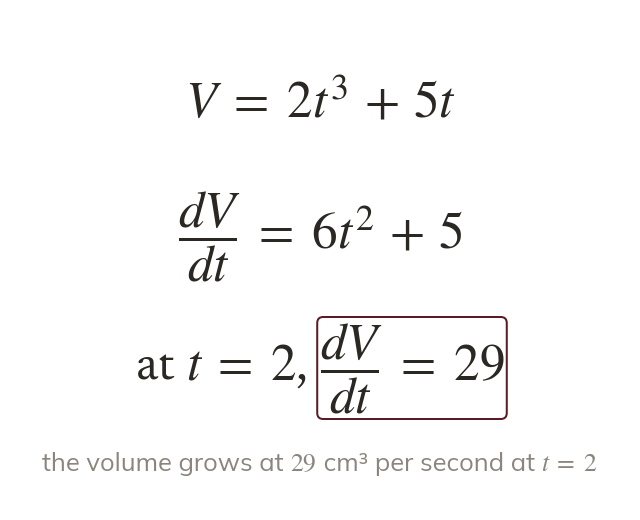
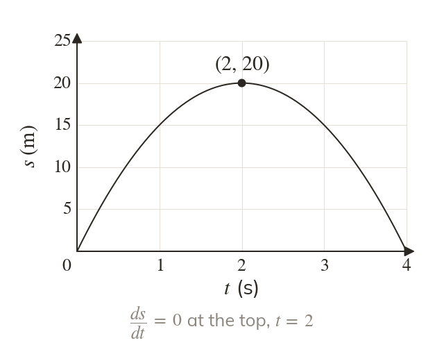
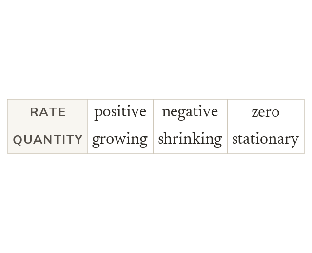
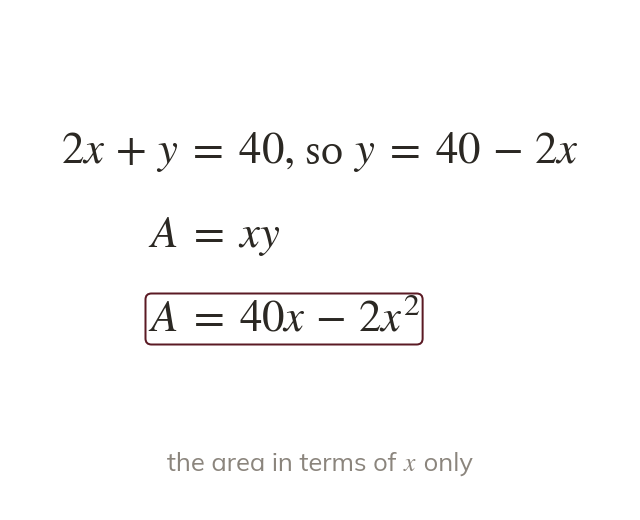
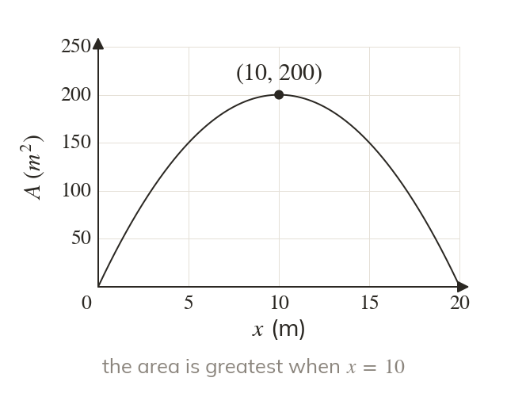
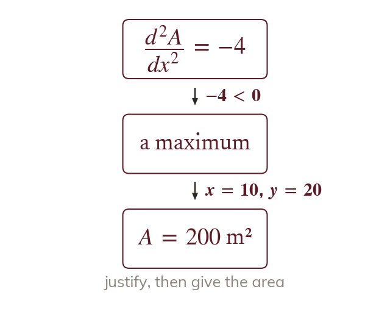

A derivative is a rate
The derivative is the rate of change of V with respect to t. If V is in cm³ and t in seconds, is in cm³ per second, cm³
A derivative is a rate of change, so differentiation answers "how fast?" and "what is the largest or smallest?" in real situations. This lesson closes the chapter by using every step so far. Write the quantity in one variable, differentiate, set the derivative to and check the nature.
Work down the page at your own pace. Write every answer in your book first, then click to check it.
Read each card, then follow the worked examples one step at a time.

The derivative is the rate of change of V with respect to t. If V is in cm³ and t in seconds, is in cm³ per second, cm³

For a distance metres after seconds, is the speed in If , which is at the highest point.

The sign of the rate says whether the quantity is growing or shrinking at that moment. A negative means V is decreasing.
Pick an answer. If it's wrong, the feedback tells you which mistake it was.
Write the blanks in your book first, then tap each one to check.
Read each card, then follow the worked examples one step at a time.

A quantity in two variables cannot be differentiated yet. Use the constraint to write it in one variable. A pen fenced on three sides with m has so

Solving gives
Then and the area is m²

The second derivative is so gives a maximum. Then give the value of the quantity asked for, the area, not just
Pick an answer. If it's wrong, the feedback tells you which mistake it was.
Write the blanks in your book first, then tap each one to check.
Finished? Next lesson: 13.1 Integrating xⁿ and Indefinite Integrals.
For each skill, tap the one that is true for you today. Your Revise pages start with anything you mark Not yet.
Your ratings are saved on this device only.
Log in, then search for a code to practise that skill.